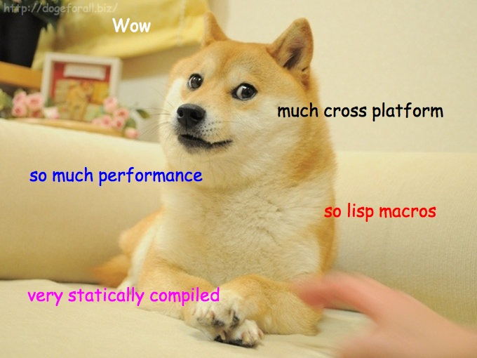

Rants from the Ballmer Peak 
Nimrod for cross platform software
On the 21st of February of 2014, Sarah Con… er… Seohtracker v4 was released for iOS. A puny little iOS app. And now the app has crossed the bridge and made it to the Mac App Store as Seohtracker for OSX. Why would this be of any relevance? Because both programs are partially implemented in the Nimrod programming language.
The Nimrod programming language compiles pythonesque style code into portable C. Might be more portable than Java. And more machine performant at the low level. And more developer performant at the high level! And more lisp macros. And… whatever man. It's just cool, and I believe it is going to allow me to produce real life programs for more platforms with less effort (still working on the less effort part, though).
But Nimrod is relatively new and unpopular. Despite the website stating "The Nimrod Compiler can also generate C++ or Objective C for easier interfacing", there's not much proof out there you can take as reference. So I decided to start my own, and that's what Seohtracker is. The internal architecture of Seohtracker splits the interface from the logic. Hence, you have a cross platform logic code which is implemented in pure Nimrod. Then, somewhere in the middle is floating a thin Nimrod to Obj-C convenience layer which exposes the Nimrod logic, and finally you have the iOS and OSX clients which are consumers of this API.
Why not write everything in Nimrod? That's something I've heard a lot. The most important practical reason is I'm a simple guy doing this on his own, and I can't compare to well paid and full of people firms doing the wrapping of all the little details. But also because each platform has a different user interface which requires separate design. For instance, the iOS version of Seohtracker is split in multiple view controllers, each reigning its own screen, while the OSX version is pretty much contained in a single root view controller for the main window. Or how about help? The mobile version includes little breadcrumbs of information in certain screens, while the mac version simply lets you go to the index and browse whatever your heart desires.
And this is just the beginning! A planned iPad specific user interface already requires a different approach from the iPhone version. But what about Android? And what about Linux? Yes, you can implement a GTK2 version for Linux/Windows too (plus there already are bindings for this toolkit). If you try to cram every platform under the same language and graphical toolkit, you are likely to piss off people on each platform, as the result won't be a 100% full citizen compared to the rest of the operating system, just that strange bloke with the weird hair, who hopefully gets the job done, or else… And if you don't use the same graphical toolkit for every platform, well, your bang for the buck for using Nimrod is very reduced, especially because there are only a few low level bindings.
Show me the money!
In the spirit of releasing some statistics like other projects do, here are some results of running SLOCCount on the iOS, OSX, and logic modules as tagged for the v4 release:
| Category | iOS | OSX | Logic |
|---|---|---|---|
| Lines of code in Objective-C | 1886 (68.71%) | 1107 (73.85%) | |
| Lines of code in Nimrod | 792 (29.85%) | 324 (21.61%) | 832 (100%) |
| Lines of code in sh | 67 (2.44%) | 68 (4.54% | |
| Total physical source lines of code (sloc) | 2,745 | 1,499 | 832 |
| Development Effort Estimate, Person-Years (Person-Months) (Basic COCOMO model, Person-Months = 2.4 * (KSLOC**1.05)) |
0.58 (6.93) | 0.31 (3.67) | 0.16 (1.28) |
| Schedule Estimate, Years (Months) (Basic COCOMO model, Months = 2.5 * (person-months**0.38)) |
0.43 (5.22) | 0.34 (4.10) | 0.27 (3.24) |
| Estimated Average Number of Developers (Effort/Schedule) | 1.33 | 0.90 | 0.61 |
| Total Estimated Cost to Develop (average salary = $56,286/year, overhead = 2.40). | $ 78,003 | $ 41,327 | $ 22,273 |
| Grand total | $ 141,603 | ||
|
SLOCCount, Copyright (C) 2001-2004 David A. Wheeler SLOCCount is Open Source Software/Free Software, licensed under the GNU GPL. SLOCCount comes with ABSOLUTELY NO WARRANTY, and you are welcome to redistribute it under certain conditions as specified by the GNU GPL license; see the documentation for details. Please credit this data as "generated using David A. Wheeler's 'SLOCCount'." | |||
- SLOCCount actually doesn't support Nimrod, but since the source code and syntax is very similar with regards to line counting, I modified my copy of SLOCCount to treat
.nimfiles as Python to get immediate results. - The number of lines for Nimrod is really small compared to Objective-C because the logic is small as well, this kind of app is mostly user interface, plus Nimrod is a higher level language than Objective-C. Just starting an Objective-C file from the Xcode template tends to give you a full page chunk of code doing nothing at all. It's not as bad as Java, but still very verbose.
- The reason iOS has more lines than OSX is because it is more complex, has more screens, and requires special code to communicate between them. In comparison the OSX version feels like a global variable with less code overhead.
- Even though both the iOS and OSX clients are just interface, instead of shell scripts I used Nimrod through nakefiles to drive compilation, generate and package the different resources. Think of nakefiles as GNU makefiles on steroids. That's the reason you see Nimrod lines of code dedicated to them. Nearly none of them do any logic code in the app the user sees, they are for support. Also, both iOS and OSX nakefiles share some code I haven't yet come to factor, since I was more interested in releasing the OSX version first.
- Unfortunately for this comparison I took the repositories as they were tagged for the v4 release. The splitting of Nimrod code from the iOS repository into a separate module happened later. Which means that the iOS lines of codes for Nimrod are bogus, the current development branch shows just 204 lines of Nimrod code, which goes more in line with the 324 lines of Nimrod code for OS X (the OSX nakefile does more to transform and generate native OSX help files). Anyway, the point here is that reducing the Nimrod lines of code attributed to the iOS client would increase the percentage of native Objective-C code and put it more in line with the OSX version.
- Thanks to the separation of logic vs interface, the test suite of the logic module needs to exist only once. Compare this to current independent mobile developments where different teams develop iOS and Android (sometimes even different code bases for iPhone vs iPad!), each incurring its own share of bugs and odd behaviours. Have you seen firms update their iOS/Android app to leave the other platform (whatever it might be) picking dust? In my case, the testing can be done once, and from here on for each additional platform I add to the suite I get free time to spend browsing kpop videos on youtube.
- $56,286/year? Seriously? What parallel universe does that come from? According to more recent articles, a software developer gets on average $90,060/year. And if you go asking around, it seems like this mobile thing is not a fad, and mobile developers tend to be paid more because there is less of them (and arguably they are worse, because they haven't had the chance to get enough experience in such a short lived field yet). But anyway, how would the cost look like with that higher more recent average? Just multiply by a factor of
90,060/56,286 = 1.6.
| Category | iOS | OSX | Logic |
|---|---|---|---|
| Total Estimated Cost to Develop (average salary = $90,060/year, overhead = 2.40). | $ 124,808 | $ 66,125 | $ 35,637 |
| Grand total | $ 226,570 | ||
| Updated salary wages by random internet US centric post. | |||
In any case, you should ignore the statistics for lines of code, they are pretty much useless for experiments like this which don't fall into the normal development category.
It's 16:27 past deadline
How about if we measure time? Fortunately I did track all the hours I put into this project so far. Unfortunately, until v4 all the previous iPhone releases had both Objective-C and Nimrod hours lumped, while after v4 most Nimrod hours will go to the logic module. At least we can get more realistic cost estimates. Let's consider a full US work year in neoliberal hours, which clocks at 2088 hours per year. Using this metric we get that the default average software developer earns 26.96 $/h, while the corrected averaged programmer earns 43.13 $/h (still lower than what I've seen reported on various iOS forums, but let it be).
| State | iOS | OSX | Logic | ||||
|---|---|---|---|---|---|---|---|
| v1 | 44.33 | ||||||
| v2 | 22.08 | ||||||
| v1+v2 | 66.41 | ||||||
| v3 | 9.17 | ||||||
| v1+v2+v3 | 75.58 | ||||||
| v4 | 26.08 | 56.92 | 3.75 | ||||
| v1+v2+v3+v4 | 102.16 | ||||||
Total hours for the combined project: 162.33.
Estimated costs: 162.33 * 26.96 = 4376.41$
Or the more realistic average: 162.33 * 41.13 = 6676.63$
Thoughts:
- No kidding, under 4 hours to implement the full logic of the code, split in a nice documented module, all with unit tests? Nah, that was essentially the time it took me to extirpate the code from the iOS repository into the logic repository. The actual time I have probably spent on the Nimrod code is more in line with 40 hours, which is roughly the total iOS minus the OSX time. This would mean that nearly half of development time was shaved off thanks to Nimrod. Even though you don't care, thank you, Nimrod!
- Seriously, 226,570$ vs 6,676.63$? I know that SLOCCount has a whole lot of documentation which I haven't even tried to read explaining how to fine tune the estimated cost of the lines of code, but the difference is ridiculous. People using lines of code to measure anything should be hanged from trees (regardless of proper SLOCCount parameters). The true real cost of this software so far has been approximately one month of an iOS developer. Extrapolate that to whatever local market prices are appropriate for you.
- An experienced OSX developer would have reduced the hour count of 56.42 hours even more. Despite being similar to iOS, OSX has its own share of weird oddities accrued through years of bugs and incorrect API designs. Really, it took me 8 hours to figure out how to correctly generate the OSX help from HTML files. Or 3 hours to find out how to keep widgets on top of a scrolling window from leaving artifacts. Which begs the question: why are your defaults so sucky OSX? WHY?! Experience on a platform goes a long way towards being productive.
- Looks like there are no good choices for OSX regarding in-app advertisements like on the mobile platforms. I did take a look at BuySellAds and The DECK, but they are so exclusive they don't answer email or they reject you. So I rolled my own. Behold the power of marketing! (right there, in the lower right corner of the left window). Any opportunity is good to make fun of the world for being such a shitty place.
{kind=link}
The good about using Nimrod
- Awesome programming language, free of clutter, easy to write integrated custom builders, compiles and runs at the speed of c (light).
- Features like exception tracking in the language allow one to decorate the Nimrod API exported to C and prevent uncaught Nimrod exceptions from crashing your pretty program. Languages like Ruby or Python require you to write unit tests instead, and depend on your skill to cover all cases.
- Write once your logic, or test it once. Works on every platform the same. In fact, I would not write or test in iOS at all! You simply run and debug on your desktop machine, faster, easier, and when everything is all right it just worked on the target platform.
- Not specific of Nimrod but of the approach I took, by writing logic separately you force yourself to write better code. I had much satisfaction in ending the OSX client without having to modify a single line of code in the logic module. Writing a logic module like this is more similar to developing a library for other developers than normal applications where you are free to do any number of untold abominations in order to reach your goal.
- Future platforms will come, and I will have nearly zero work to do on them regarding the logic. All users will experience the same quality of software (which depending how you look at it could be bad! Embedded html apps, I'm looking at you).
The bad about using Nimrod
Unfortunately, Nimrod is not a girl, not yet a woman:
- Bugs. Prepare to find them and report them. I remember having a week where I'd find one every day. Which means, you are sometimes forced to write ugly code to work around them (if they can be worked around!). And this means less time working on creating code, more debugging Nimrod.
- Nimrod is underdeveloped. Sometimes you report a bug and get a fix some hours later. But it's more likely that you will hear nothing for days and maybe weeks. Don't plan on using Nimrod (yet) for software you have to deliver on a schedule. You will just end up hating Nimrod.
- Speaking of which, using a stable and recent compiler version can be tricky. The last official stable version doesn't support all the awesome features in development of the language. The git versions of the compiler may eat your code for breakfast. Play safe and always keep a log of which git compiler commits did work or not. Store the generated C source safe somewhere, you might need to diff it against newer versions.
- No higher level integration at all with C++/Objective-C features, like class inheritance. You can easily import single classes, but they won't have inheritance information, so you can't pass an
NSStringto a method which expects anyid, which is like the bread and butter of the Objective-C code. For this reason the logic module has been implemented using the most simple plain C interface. This is quite limiting and I could not implementNSNotificationreporting inside the logic module. Had to do it in the user interface layer, which is wrong and prone to mistakes. - I have an idea of how to overcome this limitation, but when I tried, I found more bugs. Which is sort of cool, now I think I have a work around around that bug to work around the class inheritance limitation. If you like solving problems, Nimrod is great!
- Cross-language threading sucks big time. You can thread in Nimrod. And you can thread in Objective-C. But if you try to cross the streams… total protonic reversal, meaning your software crashes. This is a really big problem with mobile, because essentially everything has to be asynchronous or the user will close your app because it took too long to do something. And you can't call Nimrod code at all from a background thread, so you have to contort your logic/code to funnel on the main thread… somehow. I still haven't figured this out, so all the long operations in Seohtracker are user interface blocking. Fuck users. Good thing I don't have any!
Maybe you have noticed a pattern here? Lack of developer power, since all of these issues are fixable. A one man language has little to do against projects sponsored by multimillion companies. And multimillion companies lack the taste to fund a language like Nimrod, so this looks troubling. If you are working on a tight schedule I don't recommend using Nimrod (unless you overestimate like SLOCCount, hah!). If you like tinkering with cool stuff and don't mind getting dirty, go ahead.
You don't need Nimrod to write software for iOS and OSX
True. The astute reader will realize that both platforms use Objective-C, a quite ancient crap language (what else can you expect from C?) which only recently (thanks to the iPhone) has been cardiopulmonarily resuscitated with GCD and ARC (don't you love to throw acronyms around to look like you know stuff?) so that programmers from other platforms willing to start writing software for Apple devices manage to get past the yuck factor.
But in the previous paragraphs I've already outlined the possibilities: the Nimrod logic code is already cross platform, you can grab the compiler and run the test suite on Windows, Mac, Linux and whatever else you are able to run Nimrod. Don't worry, the clients for other platforms will come. Just no guarantees on a delivery date, being a programmer means you have to master weaseling out of committing to a deadline. So whenever it's done.
This is my first little step. Hopefully it will turn into a long walk and you will be able to witness true cross platform-ness. Who knows, maybe Nimrod will even start to be relevant to Wikipedia? In your dreams…
Nimrod (programming language). From Wikipedia, the free encyclopedia. This page has been deleted. The deletion and move log for the page are provided below for reference.
|